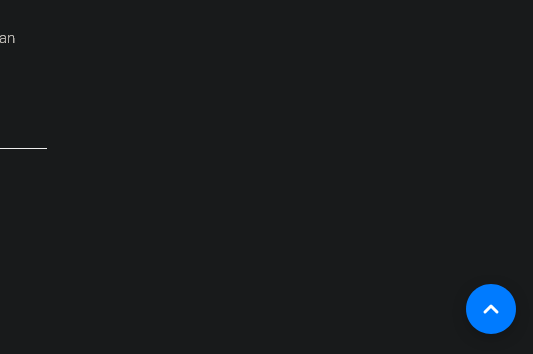
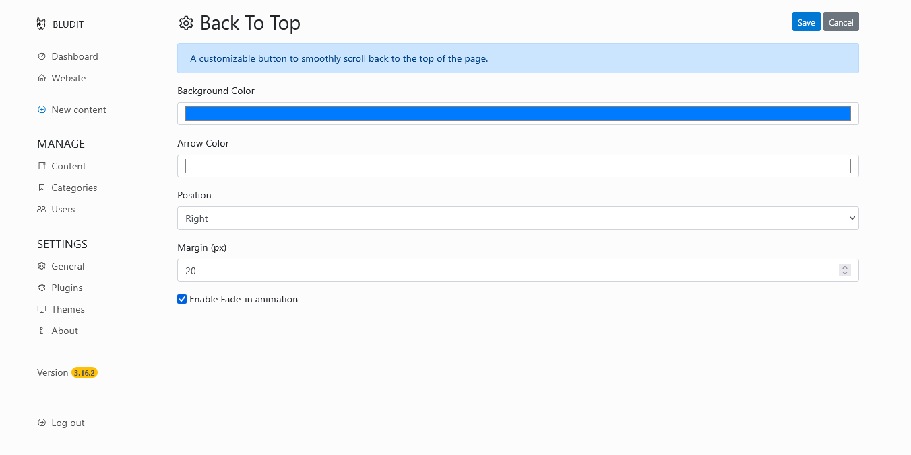
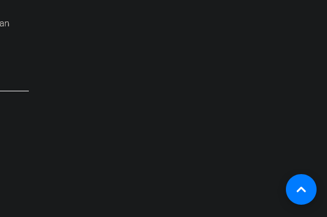
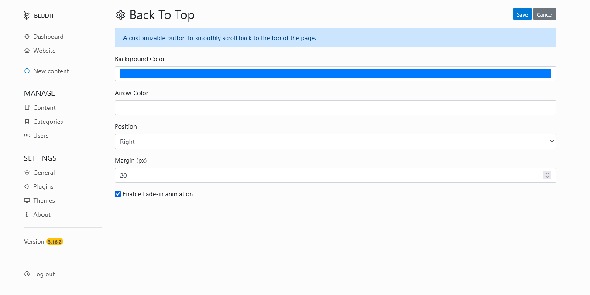

Back To Top
A customizable button to smoothly scroll back to the top of the page.

If you found any issues please report it on the issues page.
A customizable button to smoothly scroll back to the top of the page.

If you found any issues please report it on the issues page.